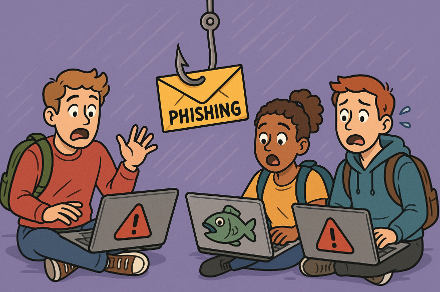

Baited: Exploring how Phishing Scams Strike Colleges
Team: Gobling Gang
Members: Diego Licea, Jace Ladenburg
Phishing Scams are harmful and dangerous attacks that look to obtain the victim's personal information or money. Such scams are especially concerning in academia, where students and faculty’s sensitive information is at risk. This study looks into the frequency and severity of phishing attacks in a university setting. It utilizes an online survey of the target population and statistical analysis methods...
Phishing
Cybersecurity
Fraud
College
Internet Safety
View Proposal Document